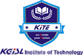

{% block title %}- about{% endblock %}
{% extends 'base.html' %}
{% block content %}
<section class="page about_page">
    <div class="about_container">
        <h1 class="title">KGiSL Institute of Technology</h1>

        

        <p class="content">
            KGISL Institute of Technology (KITE) is a private engineering college located in Coimbatore, Tamil Nadu,
            India.
            It was established in 2008 and is affiliated with Anna University. KIT offers undergraduate and postgraduate
            programs in various fields of engineering, including computer science, electronics and communication,
            mechanical, civil, and information technology. The college also offers research programs leading to PhD
            degrees
            in engineering. The campus is spread over 75 acres and has modern facilities such as a library, computer
            labs,
            sports facilities, and a student center. The faculty is highly qualified and experienced, and the college
            has a
            good record of placement in reputed companies.
        </p>
    </div>
</section>
{% endblock content %}